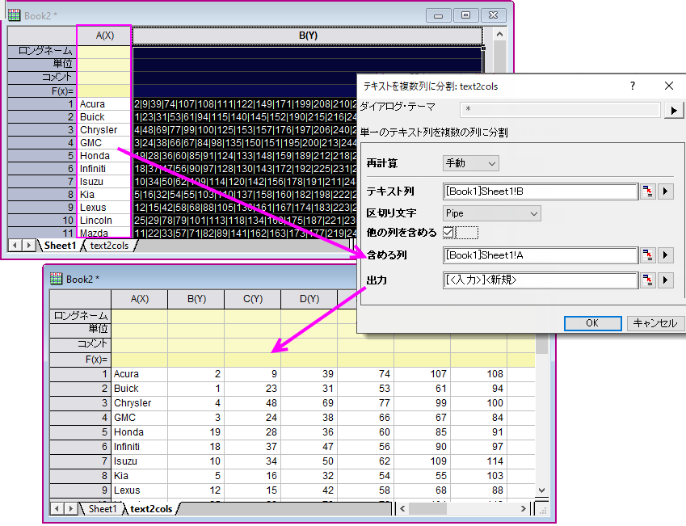

FAQ-1050 Originには、MS Excelの「区切り位置」ウィザードのようなツールがありますか？
Origin-Tool-Like-Excel-Text-To-Columns-Wizard
最終更新日：2020/3/5
MS Excelと同様に、Originにはセルテキストを複数のセル（列）に分割するツールがあります。テキストは、カンマ、セミコロン、パイプ、またはスペースで区切られている必要があります。
- スクリプトウィンドウ( ウィンドウ：スクリプトウィンドウ )を開き、以下のように入力してEnterキーを押します。
text2cols -d
- テキストを複数列に分割ダイアログで、テキスト列と区切り文字を選択します。追加の列を出力にコピーする場合は、他の列を含めるボックスにチェックを付けて、含める列を指定します。
- 出力先を指定して、OKをクリックします。
- 
キーワード:文字列, 区切り, 区切り文字, 分割